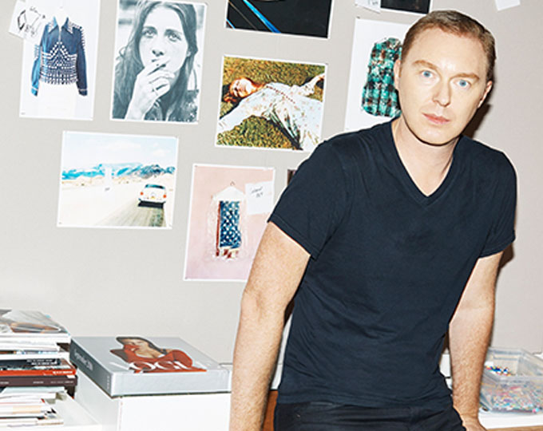

홈 > 브랜드 매거진 > 코치
코치
코치는 실용적 가죽 제품을 일상적 럭셔리의 영역으로 끌어올린 브랜드다. 과시적 명품보다 접근 가능한 품질과 라이프스타일 이미지를 통해 오래 쓰는 가방의 감각을 브랜드화했다.
산업 분야 패션·럭셔리 · 공개 등급 매거진 완성 · 브랜드 평가 5 ★


한눈에 보는 브랜드
코치는 실용적 가죽 제품을 일상적 럭셔리의 영역으로 끌어올린 브랜드다. 과시적 명품보다 접근 가능한 품질과 라이프스타일 이미지를 통해 오래 쓰는 가방의 감각을 브랜드화했다.
브랜드 관점
코치는 실용적 가죽 제품을 일상적 럭셔리의 영역으로 끌어올린 브랜드다. 과시적 명품보다 접근 가능한 품질과 라이프스타일 이미지를 통해 오래 쓰는 가방의 감각을 브랜드화했다.
시작과 성장
미국의 명품 브랜드 코치는 1941년 뉴욕의 한 가죽 공방에서 출발했다. 가죽 세공인이었던 마일스 칸과 릴리안 칸 부부는 이 공방을 인수하고 새로운 가죽을 개발해 1962년 코치 레더웨어 컴퍼니를 차렸다.
현재 핸드백을 포함해 의류, 액세서리, 신발, 향수 등을 생산한다.
브랜드 아이덴티티
코치는 '글로벌 모던 럭셔리'라는 컨셉을 표방하며 '한 세대를 아우르는 합리적인 명품'을 추구한다. 명품 가죽 브랜드 시장에서 쟁쟁한 유럽 브랜드와 견줄만한 미국 브랜드로 자리잡으며 전 세계의 많은 사람들이 코치 제품을 사용할 수 있도록 글로벌 브랜드 전략을 펼치고 있다.
제품과 서비스
코치는 '글로벌 모던 럭셔리'라는 컨셉을 표방하며 '한 세대를 아우르는 합리적인 명품'을 추구한다. 명품 가죽 브랜드 시장에서 쟁쟁한 유럽 브랜드와 견줄만한 미국 브랜드로 자리잡으며 전 세계의 많은 사람들이 코치 제품을 사용할 수 있도록 글로벌 브랜드 전략을 펼치고 있다.
현재 상태
타임라인
BI/CI 변천사
함께 읽을 브랜드
 패션·럭셔리 · 매거진 완성몽블랑
패션·럭셔리 · 매거진 완성몽블랑몽블랑은 필기구를 기록의 도구에서 성취와 품격의 상징으로 끌어올린 브랜드다. 만년필은 기능 제품이지만, 브랜드가 축적한 이미지는 서명, 의사결정, 지적 권위 같은 장...
 패션·럭셔리 · 편집 검수디젤
패션·럭셔리 · 편집 검수디젤디젤(Diesel)은 1978년 렌조 로소가 이탈리아 브레간체에서 설립한 데님 중심의 컨템포러리 패션 브랜드다. 도발적이고 실험적인 디자인으로 데님 헤리티지를 재해석...
 패션·럭셔리 · 편집 검수DKNY
패션·럭셔리 · 편집 검수DKNYDKNY는 도나 카란이 뉴욕의 도시적 감성을 담아 만든 미국의 패션 브랜드이다.
 패션·럭셔리 · 매거진 완성빅토리아 시크릿
패션·럭셔리 · 매거진 완성빅토리아 시크릿빅토리아 시크릿은 속옷을 기능적 제품이 아니라 무대화된 판타지와 자기표현의 이미지로 포장한 브랜드다. 브랜드는 제품보다 쇼, 모델, 시각적 연출을 통해 소비자가 상상...
 패션·럭셔리 · 매거진 완성티파니
패션·럭셔리 · 매거진 완성티파니티파니는 주얼리 자체만큼이나 색과 포장, 선물의 의식을 브랜드 자산으로 만든다. 블루 박스와 매장 경험은 제품을 구매하는 순간을 특별한 사건으로 바꾸며, 브랜드의 상...
 패션·럭셔리 · 매거진 완성프라다
패션·럭셔리 · 매거진 완성프라다프라다는 아름다움을 익숙한 화려함보다 지적인 긴장감으로 표현하는 브랜드다. 소재와 형태, 절제된 색감은 패션을 단순한 장식이 아니라 관찰과 해석의 대상으로 만든다.
Lo
Lorod
패션·럭셔리 · 편집 검수Lorod로로드는 2015년 로런 로드리게스와 마이클 프릴스가 뉴욕에서 설립한 여성복 레이블이다. 두 사람은 파슨스에서 처음 만났고, 빈티지 아메리카나 워크웨어를 색·소재·비...
 패션·럭셔리 · 자료 기반내셔널지오그래픽 어패럴
패션·럭셔리 · 자료 기반내셔널지오그래픽 어패럴내셔널지오그래픽 어패럴(National Geographic Apparel)은 한국 더네이처홀딩스가 내셔널지오그래픽 라이선스로 전개하는 라이프스타일 아웃도어 패션 브랜...